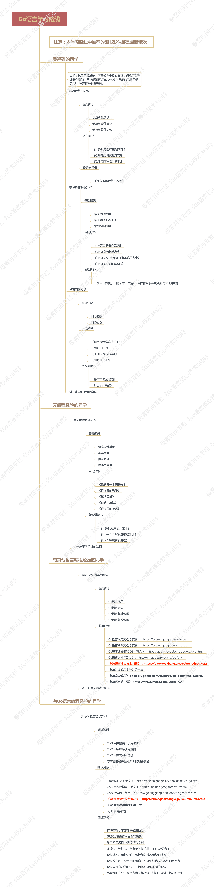


- 00 导读 写给0基础入门的Go语言学习者.md
- 00 导读 学习专栏的正确姿势.md
- 00 开篇词 跟着学，你也能成为Go语言高手.md
- 01 工作区和GOPATH.md
- 02 命令源码文件.md
- 03 库源码文件.md
- 04 程序实体的那些事儿（上）.md
- 05 程序实体的那些事儿（中）.md
- 06 程序实体的那些事儿 （下）.md
- 07 数组和切片.md
- 08 container包中的那些容器.md
- 09 字典的操作和约束.md
- 10 通道的基本操作.md
- 11 通道的高级玩法.md
- 12 使用函数的正确姿势.md
- 13 结构体及其方法的使用法门.md
- 14 接口类型的合理运用.md
- 15 关于指针的有限操作.md
- 16 go语句及其执行规则（上）.md
- 17 go语句及其执行规则（下）.md
- 18 if语句、for语句和switch语句.md
- 19 错误处理（上）.md
- 20 错误处理 （下）.md
- 21 panic函数、recover函数以及defer语句 （上）.md
- 22 panic函数、recover函数以及defer语句（下）.md
- 23 测试的基本规则和流程 （上）.md
- 24 测试的基本规则和流程（下）.md
- 25 更多的测试手法.md
- 26 sync.Mutex与sync.RWMutex.md
- 27 条件变量sync.Cond （上）.md
- 28 条件变量sync.Cond （下）.md
- 29 原子操作（上）.md
- 30 原子操作（下）.md
- 31 sync.WaitGroup和sync.Once.md
- 32 context.Context类型.md
- 33 临时对象池sync.Pool.md
- 34 并发安全字典sync.Map （上）.md
- 35 并发安全字典sync.Map (下).md
- 36 unicode与字符编码.md
- 37 strings包与字符串操作.md
- 38 bytes包与字节串操作（上）.md
- 39 bytes包与字节串操作（下）.md
- 40 io包中的接口和工具 （上）.md
- 41 io包中的接口和工具 （下）.md
- 42 bufio包中的数据类型 （上）.md
- 43 bufio包中的数据类型（下）.md
- 44 使用os包中的API （上）.md
- 45 使用os包中的API （下）.md
- 46 访问网络服务.md
- 47 基于HTTP协议的网络服务.md
- 48 程序性能分析基础（上）.md
- 49 程序性能分析基础（下）.md
- 尾声 愿你披荆斩棘，所向无敌.md
- 新年彩蛋 完整版思考题答案.md
00 导读 写给0基础入门的Go语言学习者
你好，我是郝林，今天我分享的内容是：0基础的你，如何开始入门学习Go语言。
- 你需要遵循怎样的学习路径来学习Go语言？ ————————
我们发现，订阅本专栏的同学们都在非常积极的学习和讨论，这让我们非常欣慰，并且和你一样干劲十足。不过，我在留言中发现，大家的基础好像都不太一样，大致可以分为这么几类。
- 零基础的同学：可能正准备入行或者刚刚对编程感兴趣，可以熟练操作电脑，但是对计算机、操作系统以及网络方面的知识不太了解。
- 无编程经验或者编程经验较少的同学：可能正在从事其他的技术相关工作，也许可以熟练编写脚本，但是对程序设计的通用知识和技巧还不太了解。
- 有其他语言编程经验的同学：可能已成为程序员或软件工程师，可以用其他的编程语言熟练编写程序，但是对Go语言还不太了解。
- 有一定Go语言编程经验的同学：已有Go语言编程基础，写过一些Go语言程序，但是急需进阶却看不清途径。
基于以上分类，我为大家制定了一份Go语言学习路径。不论你属于上面的哪一类，都可以按照此路径去学习深造。具体请看下面的思维导图。

（长按保存大图）
- 学习本专栏前，你需要有哪些基础知识储备？ ————————
在这个专栏里，我会假设你有一定的计算机基础，比如，知道操作系统是什么、环境变量怎么设置、命令行怎样使用，等等。
另外，我还会假定你具备一点点编程知识，比如，知道程序是什么、程序通常会以怎样的形式存在，以及程序与操作系统和计算机有哪些关系，等等。
对了，还有在这个早已成熟的移动互联网时代，想学编程的你，一定也应该知道那些最最基本的网络知识。
我在本专栏里只会讨论Go语言的代码和程序，而不会提及太多计算机体系结构或软件工程方面的事情。所以你即使没有专门学过计算机系统或者软件工程也没有关系，我会尽量连带讲一些必要的基础概念和知识。
从2018年开始，随着Google逐渐重回中国，Go语言的官方网站在Google中国的域名下也有了镜像，毕竟中国是Go语言爱好者最多的国家，同时也是Go语言使用最广泛的一片土地。如果你在国内，可以敲入这个网址来访问Go语言的官网。
这个专栏专注于Go语言的核心知识，因此我并不会深入说明所有关于语法和命令的细枝末节。如果你想去全面了解Go语言的所有语法，那么可以去Go语言官网的语言规范页面仔细查阅。
当然了，这里的语言规范是全英文的，如果你想看汉化的内容也是有选择的，我记得先后有几拨国内的Go语言爱好者自发组织翻译过。不过我都没有仔细看过，不知道质量如何，所以在这里就不特别推荐了。
对于从事计算机和软件开发相关工作的同学，我强烈建议你们要有意地训练快速阅读英文文档的能力，不论是否借助字典和翻译工具。
不过，如果你想专门学习一下Go命令方面的知识和技巧，那么我推荐你看看我之前写的免费开源教程《Go命令教程》。这份教程的内容虽然稍显陈旧，但是帮助你学会使用Go语言自带的常用命令和工具肯定是没问题的。
好了，其实即使你是个编程小白也不用过于担心，我们会一起帮助你的。至于我刚刚说的Go语言规范和Go命令教程，你也可以在学习本专栏的过程中根据实际需要去有针对性的阅读。
3.这里有一份基础知识列表，请查收
如果你阅读本专栏的第一个模块时感觉有些吃力，那可能是你还没有熟悉Go语言的一些基础概念和知识。我为你精心制作了一张Go语言基础知识的导图，里面几乎包含了入门Go语言所需的所有知识点。

- （长按保存大图）有了这些，你是否已经感觉学习本专栏会更加轻松了呢？
总之，教程、资料和助推就交给我和极客时间的编辑、运营们来共同负责。而你需要做的，就是保存好这一份对Go语言学习的决心，你可以自己去尝试整理一份Go语言的学习笔记，遇见不懂的地方，你也可以在文章下面留言，我们一起讨论。
好了，感谢你的收听，我们下期再见。
© 2019 - 2023 Liangliang Lee. Powered by gin and hexo-theme-book.